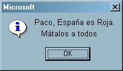

Siglo XX
 De: La Frikipedia, la enciclopedia extremadamente seria.
De: La Frikipedia, la enciclopedia extremadamente seria.
El Fary: Siglo

- siglo XX

Escena cotidiana del sijlo XX

1979: Revolución en
Irán, se sacuden el yugo del Sha y abrazan la libertad bajo el benevolente puño de hierro del Ayatollah
«El tercer Reich durara mil años»
~ Hitler hablando desde la perspectiva del Sijlo XX
«... ... ...»
~ Chaplin acerca de todo lo importante Sijlo XX
«¡En este si!»
~ La Selección Aspañola de Furbo durante cada mundial del sijlo XX
«Si se pelea una tercera guerra mundial con armamento nuclear, la cuarta se peleara con piedras y palos»
~ Einstein haciendo una relativa predicción sobre el sijlo XXI
Época histérica en la que la gente la primera mitad se lo pasó bien y luego no tan bien, al final la gente se lo pasaba bien pero las cosas estaban mal aunque ya nadie se quejaba.
Está claro que esta sólo es una definición superficial de lo que fue el gran siglo de la historia después de el "Siglo " que fue en el que nació El Fary y dejó acontecimientos de extrema importancia como la muerte de Chanquete o la invención de Doraemon.
En este siglo se han descubierto cosas tan importantes como la sociedad secreta de la cual sólo forman parte los más selectos Oompa Loompas que intentaran dominar el mundo antes que los frikis.
Hablando de especies, también se han descubierto otras especies como los pijos, cuya misión es intentar ser iguales en todo incluyendo diferentes sexos, además de las más variopintas especies que habitan dentro de los armarios de las personas como el el mono maligno, el hombre maligno y el pijama maligno. En conclusión ha sido uno de los siglos más fructíferos de la raza humana.
 1936: Y así empezó la Guerra Civil Española

30s y 40s: En realidad el sijlo no fue tan malo... bueno si
90's: Maravilla del Sijlo XX
Cronología
- 1900: se Festejo la llegada del sijlo XX por todo el mundo
- 1901: Empieza el Sijlo XX
- 1910: La Revolución Mexicana comienza a acabar a México
- 1912: ¿Qué se imaginan que paso con el Inundible?
- 1917: La Revolución Rusa empieza; las cosas van bien hasta que llega un tipo llamado Stalin
- 1927: La Revolución Mexicana termina de acabar a México, el pueblo alcanza su libertad y comienzan 70 años de Presidencia Imperial
- 1936: Franco recibe un mensaje de Microsoft: empieza la guerra civil
- 1939: Comienza la gran fiesta Alemana ("Oktöberfest!"), invitan a seis millones de judíos
- 1948: Fundación de Israel: Trueque de Éxodos: Judío por Palestino
- 1975: Bill Gates funda Hasefroch... y el destino nos alcanza
- 1982: Los Británicos se roban las Islas Malvinas... ¡increíblemente aun cuando ya se las habían robado!
- 1989: Unos vándalos rompen el muro de Berlín, en la U.R.S.S. se decepcionan tanto que... bueno tu sabes el resto
- 1992: Hugo Chávez falla su golpe de estado y es encerrado... ¡tiempos aquellos!
- 1999: Blink 182 tiene auge y comienza la ola de algo llamado "Happy punk", que no era ni "Happy" ni "Punk"
- 2000: Nos damos cuenta de que todavía no llegamos al Sijlo XXI
Eventos
Personalidades nacidas en el Sijlo XX
Logros
Tecnología
- Explosión del Pron: El avance más destacado de los últimos años del sijlo XX fue sin duda la explosión masiva del pr0n. ¡Ahh!, por cierto: la explosión se dio a través del interné, que aparentemente vino a sustituir a un estúpido sistema en el que las personas de diferentes lugares intercambiaban información y noticias escribiendo mensajes en hojas de papel, las cuales posteriormente mandaban dentro de un sobre a través de largas distancias (incluso continentales) usando el mismo sistema que se usa para enviar las mercancías que compras en amazon... ¡Vaya estupidez!
- Se desarrolla la tecnología Backspace y Ctrl-C Ctrl-V: Otra fue la introducción de las computadoras personales, las cuales desplazaron a aparatosas maquinas que eran como las computadoras, sólo que sin el monitor, ni el CD rom, ni nada a parte del teclado, y que sólo era capaz de regresar una hoja en la cual escribas... pero lo peor esta por venir: resulta que cada vez que presionabas una tecla esta no podía ser borrada por lo que el backspace técnicamente no servia de nada.
- Código binario: Se inventa el más estúpido y engorroso método para transcribir información.
- Bomba Atómica: Se descubre la receta para las armas nucleares y Estados Unidos hace del mundo un lugar más seguro para la libertad:
1917 - 1991: El sijlo del
Comunismo: de izquierda a derecha,
Trotsky,
Lenin y
Stalin durante el 90 congreso del PCUS. Nótese lo bien que se conservan los jodíos
Donde: : "Bombardeo de Neutrones", : "Uranio 234", : "Reacción en Cadena" , : "Fisión Nuclear" y : Risa de megalomano venido a más
Se logra crear 9 anti-atomos de hidrogeno. Cuando uno de estos choca con un atomo, pasa lo mismo que en la bomba atomica multiplicado por 4, pero con una bomba del tamaño de un bebe prematuro. Los que lograron esa asaña obtuvieron el premio Nobel de la paz.
Física

1948: Fundación de
Israel: Termina el éxodo
Judío, comienza el éxodo Palestino
- Teoría de la Relatividad: Tras aplicar ecuaciones relativamente complejas, Einstein llega a una conclusión relativamente asombrosa: postula la idea de que, relativamente hablando, todos tenemos la razón y a la vez no la tenemos. Tras conseguir el apoyo relativo de la comunidad científica Einstein comienza a confundir a todo el mundo de manera muy concreta y nada relativa.
- 200
01: Una vez terminadas las costosas celebraciones para festejar la llegada del sijlo XXI en todo el mundo los matemáticos revelaron que el sijlo empezaba la año siguiente... ¡Diox, ¿Alguien quiere comenzar los preparativos otra vez?!.
Lingüistica y Literatura
Música
Sólo contaban con un puñado de películas comerciales buenas como "Volver al Futuro" ("Back to the Future"), "Alien" y la saga de "Rocky" que tuvo que esperar al arribo de la tecnología del Sijlo XXI para poder concluir, también había otras no tan buenas como "Terminator".
Entre otras cosas a mencionar están que George Lucas se hizo rico la saga de "Star Wars", la invasión de películas francesas que sólo entienden ellos nadie entiende y la invención del Cine.
Filosofía
- Pensamiento circular: En este sijlo los filósofos llegan al cenit de su gloria y nace la pregunta fundamental: "¿Que fue primero: el Huevo o la Gallina?"
- Filosofía del lenguaje: Los abstractos y metódicamente inconmensurables teoremas idealicistas de Kaffinsky inspiran a Wittgenstein a fundar la semiotecnia dialéctica.
Otras Locuras del Sijlo
Balance
Puntos a favor
1962 - 1999: James Bond salva al mundo en 19 ocasiones
Puntos en Contra
El Mal Rollo del Sijlo
- Hiroshima y Nagasaki
- Primera Guerra Mundial
- Segunda Guerra Mundial
- Guerra Boer
- Guerra Fría
- Guerra de Yugoslavia
- Guerra de Bosnia
- Guerra de Kosovo
- Guerra de los Seis Días
- Guerra Árabe - Isrraelí
- Guerra del Yom Kipur
- Guerra de la Intifada (... ¡joder con los árabes y los judíos, que no se pueden estar quietos!)
- Guerra Civil Española
- Guerra civil del Congo
- Guerra de Chechenia
- Primera Guerra de los Balcanes
- Segunda Guerra de los Balcanes
- Guerra México - Estados Uni... ¡Hey, agárrenla, se me escapó!
- Guerra del Fútbol
- Guerra de Korea
- Guerra de Vietnam
- Guerra de Truños
- Guerras coloniales portuguesas
- Primera guerra del Golfo
- Segunda Guerra del Golfo
- Guerra Irán - Iraq
- Guerra Saharaui - Marroquí
- Guerra Armenio - Azerbaiyana... ¡O.0, Existe!
- Guerra Indo - Pakistaní del 65
- Guerra Indo - Pakistaní del 71
-
Guerra Indo - Pakistaní Nuclear
- Guerra de las Malvinas
Capítulo II: Las Dictaduras... y pensar es ahora cuando esto se pone feo...
Recuento de daños

90s: La
Che se vuelve icono
Pop 1917: La Revolución de
los Claveles Rusa 
1920s: Se inventa la
Televisión,
¡Gloria del Sijlo XX!... aunque hubiera convenido inventar la señal de televisión antes
Cosas del Sijlo XX de las que no salimos muy bien librados:
El Titanic esta por aquí, déjame ver...
En menos de cien años el Concorde hizo ¡Puff!
Y el Hidenburg en 20 min.
Logro arquitectónico del S. XX: Caja de concreto conteniendo a Chernobyl
Ver también
Autor(es):
- Krusher
- Haakjvork
- Doctor grijander
- Roms
- Viento
- Khazike Khashondo
- Azulejos
- Nadaquever
- Diegocon13
- Prototype
Frikipedia 2005-2016, Licencia
GFDL 1.2 - Extraído por FrikiLeaks


{kind=link}